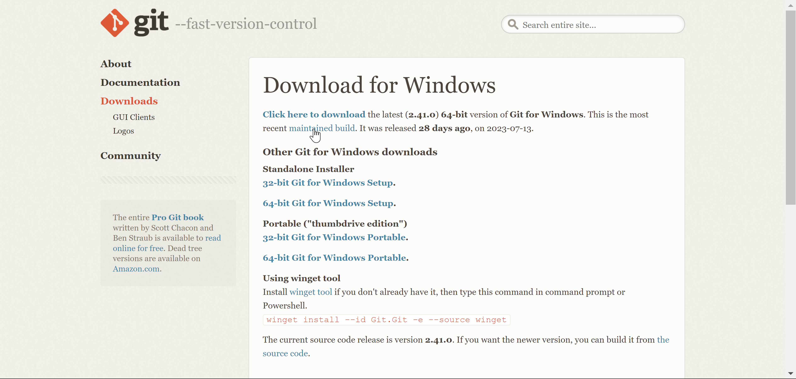
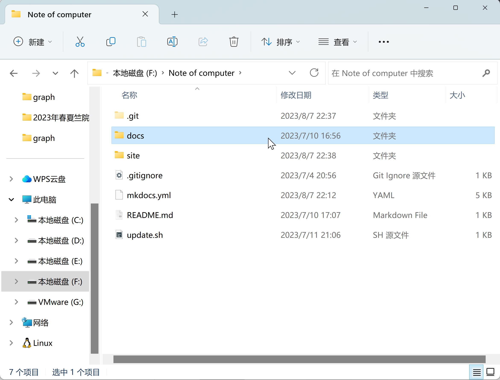

Mkdocs material使用教程#
注：mkdocs material是markdown的一个插件，可以基于github-pages布置，本教程使用的方法是最简单的基于git本地部署配制
环境配制(windows 版)#
- 你需要安装python，连接点进去下载即可，安装3.10即以下（最新版可能会有bug）
- 其次你需要安装pip，详情请看教程
- 此外你需要安装git(选择64-bits的standalone版本，直接一路next即可)

- 你需要一个Github账号
- 最好下载一个Vscode教程
- 安装mkdocs，在电脑终端使用
pip install mkdocs&pip install mkdocs-material - markdown建议使用Typora编辑器，可以从b站上搜索安装教程（选做）
使用#
- 首先你需要建立一个Github上的远程仓库，可以具体看我另外一个快速上手远程仓库教程
-
此外，你需要学习markdown的语法，详情请看我的记录（如果想要插入图片,请在文件夹下建立一个graph文件夹，并在markdown文件中使用相对路径）

-
请在命令行上使用
mkdocs new, 会自动生成一个docs文件夹，site文件夹以及一个mkdocs.yml -
重要的配制东西都在mkdocs.yml中，我将我文件内容放在下方：
site_name:
site_url: # 这个请放github仓库给你分配的github-pages的网址
site_author: your name
repo_url: https://github.com/Yaoyaolingbro/Notebook
repo_name: Yaoyaolingbro/Notebook
theme:
name: material
features:
- navigation.tabs
# - navigation.sections
- navigation.prune
- navigation.instant
- navigation.tracking
- navigation.indexes
# - navigation.expand
- navigation.tracking
- navigation.top
- header.autohide
- search.highlight
- search.share
- search.suggest
# - toc.integrate
- content.code.copy
- content.code.annotate
palette:
# Palette toggle for light mode
- media: "(prefers-color-scheme: light)"
scheme: default
primary: indigo
accent: deep purple
toggle:
icon: material/weather-sunny
name: Switch to dark mode
# Palette toggle for dark mode
- media: "(prefers-color-scheme: dark)"
scheme: slate
primary: cyan
accent: deep purple
toggle:
icon: material/weather-night
name: Switch to light mode
font:
text: Roboto
code: Roboto Mono
icon:
repo: fontawesome/brands/github
markdown_extensions:
- attr_list
- md_in_html
- footnotes
- meta # 支持markdown博客文件头的元数据，比如标题
- toc:
permalink: "#"
baselevel: 1
separator: "_"
- admonition # 支持提示块
- pymdownx.details # 提示块可折叠
- attr_list
- pymdownx.inlinehilite # 支持行内语法高亮
# - pymdownx.highlight: # 支持代码块语法高亮，！！！跟mermaid冲突
# linenums: true # 显示行号
- pymdownx.superfences: # 可在列表等处嵌入块
# make exceptions to highlighting of code:
custom_fences:
- name: mermaid
class: mermaid
format: !!python/name:mermaid2.fence_mermaid
plugins:
- search:
lang: zh
# - git-revision-date-localized
extra:
social:
- icon: fontawesome/brands/github
link: https://github.com/Yaoyaolingbro/notebook/home
analytics:
provider: google
property: G-KJB4RXSKZG
# 这里便是目录，按照自己文件夹下的格式填写即可
nav:
- Home: index.md
- ZJU_CS:
- ZJU_CS/index.md
- 超算:
- ZJU_CS/超算/index.md
- ZJU_CS/超算/AIPP.md
- Note:
- ZJU_CS/超算/class/index.md
- ZJU_CS/超算/class/L1.md
- ZJU_CS/超算/class/L2.md
- ZJU_CS/超算/class/L3.md
- ZJU_CS/超算/class/L4.md
- ZJU_CS/超算/class/L5.md
- ZJU_CS/超算/class/L6.md
- ZJU_CS/超算/class/L7.md
- ZJU_CS/超算/class/L8.md
- Lab:
- ZJU_CS/超算/homework/lab1.md
- ZJU_CS/超算/homework/lab2.md
- ZJU_CS/超算/homework/lab2.5.md
- ZJU_CS/超算/homework/lab3.md
- Advanced C Language:
- ZJU_CS/Advanced C Language/index.md
- Python:
- ZJU_CS/Python/index.md
- Missing semester:
- Missing semester/index.md
- Missing semester/toolbox.md
- Git:
- Missing semester/Git/index.md
- Missing semester/Git/fast_git.md
- Missing semester/Git/note.md
- Markdown:
- Missing semester/Markdown/index.md
- Linux:
- Missing semester/Linux/index.md
- Missing semester/Linux/shell.md
- Missing semester/Linux/C.md
- Missing semester/Linux/WSL.md
- Missing semester/Linux/advanced Linux.md
- Missing semester/Linux/vim.md
- Docker:
- Missing semester/Docker/index.md
- Ladder:
- Missing semester/Ladder/index.md
- Latex:
- Missing semester/Latex/index.md
- Online CS Courses:
- 计算机科学导论:
- Online CS Courses/Fundation of computer science/index.md
- CSAPP:
- Online CS Courses/CSAPP/index.md
- Online CS Courses/CSAPP/note.md
- CS106L:
- Online CS Courses/CS106L/index.md
- Online CS Courses/CS106L/Lecture1.md
- CS50 AI:
- Online CS Courses/CS50 AI/index.md
- Online CS Courses/CS50 AI/note.md
- AI:
- AI入门:
- AI/AI入门/index.md
- 机器学习:
- AI/机器学习/index.md
- AI/机器学习/introduction.md
- 深度学习:
- AI/深度学习/index.md
- Spark in life:
- spark in life/index.md
- spark in life/freshman.md
- spark in life/GuiZhou.md
- spark in life/kickboxing.md
- 如果想要像我一样偷懒的话，可以手写个update.sh即可，每次在git bash中操作就好。
#给出一个默认的项目路径
path="F:\Note of computer"
#先进入项目当中
cd $path
echo "####### 进入自己的项目 #######"
ls
echo "开始执行命令"
git add .
git status
#写个sleep 1s 是为了解决并发导致卡壳
sleep 1s
echo "####### 添加文件 #######"
ls_date=`date +%Y%m%d`
git commit -m "${ls_date}"
echo "####### commit #######"
sleep 1s
echo "####### 开始推送 #######"
git push
mkdocs gh-deploy
echo "####### 推送并页面部署成功 #######"
恭喜你，如果能按步骤完成你基本上就能使用了#
ps：这中间所需要的小技巧有点多，我也在不断摸索，如果想要配置的同学可以按照我这个教程来写就好。
Last update:
2023年8月10日 23:39:35
Created: 2023年5月5日 17:22:50
Created: 2023年5月5日 17:22:50